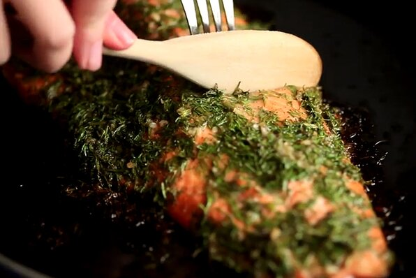

Oven-Baked Salmon with Herbs

Description
A foolproof oven-baked salmon dish that is easy to make and big on flavor. If you don't like dill, you could try other fresh herbs, or even a mixture of dill, parsley, and spring onion.
Ingredients
- 1 cup chopped fresh dill
- 3 tablespoons olive oil
- 1 lemon, juiced
- 2 cloves garlic, finely minced, or more to taste
- 1 teaspon ground coriander
- Salt and ground black pepper to taste
- 1 (2.5 pound) boneless salmon fillet
Steps
- Combine dill, olive oil, lemon juice, honey, garlic, coriander, salt, and pepper in a small bowl.
- Rinse salmon fillet under running cold water and pat dry with paper towels. Lay salmon skin-side down on a large piece of plastic wrap. Spread dill mixture all over the top of the fish, wrap well with plastic wrap, and refrigerate for 30 minutes.
- Preheat the oven to 425 degrees F (220 degrees C). Unwrap salmon and place skin-side down in a baking dish.
- Bake in the preheated oven until salmon flakes easily with a fork, 12 to 15 minutes.